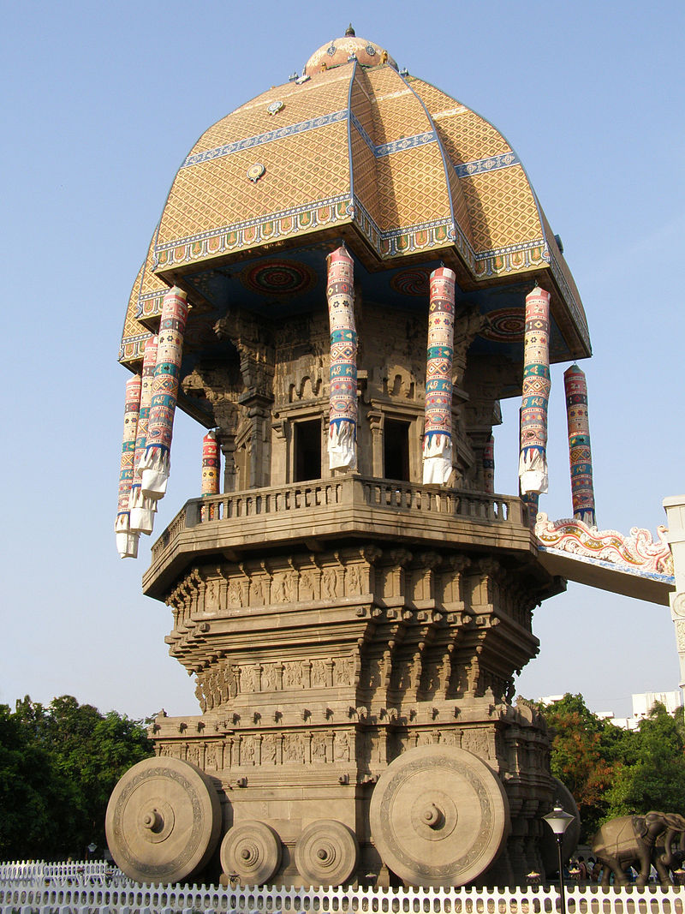

Tourism In Chennai

With its historic landmarks and buildings, long sandy beaches, cultural and art centers and parks, Chennai's tourism offers many potentially interesting locations to visitors. A notable tourist attraction in Chennai is actually in the neighbouring town of Mahabalipuram, with its ancient temples and rock carvings of the 7th century Pallava kingdom is an UNESCO World Heritage site.
Attractions
Beaches
Marina Beach is a 13-km-long urban beach along the Bay of Bengal that runs from Fort St. George in the north up to Foreshore Estate in the south. It is India's longest beach and one of the world's longest beaches and attracts around 50,000 visitors during weekends. Attractions at the Marina include the Chennai Lighthouse, MGR Memorial, Anna Memorial and Jayalalitha Memorial. The Marina's 6 km promenade includes statues of several historical figures including Mahatma Gandhi, Annie Besant, Robert Caldwell, Thiruvalluvar, Bharathiyar and Kamrajar.Elliot's Beach, also known as Besant Nagar beach begins where the Marina ends. The beach is famous for its calm atmosphere and is preferable among morning walkers. The iconic Karl Schmidt memorial, named after the Dutch sailor who lost his life in the process of saving others from drowning is located at the heart of Elliot's beach.
Historical Monuments
Vivekanandar Illam or Vivekananda house is remembered as the place where Swami Vivekananda stayed for nine days when he visited Chennai (then Madras) in 1897. Vivekananda House now houses a permanent exhibition on Indian Culture. Located on the busy Kamrajar Salai along the Marina Beach, it has become an important spiritual tourist attraction in the city.  Valluvar Kottam is a popular monument in Chennai, dedicated to the classical Tamil poet, philosopher, and saint, Thiruvalluvar who wrote his famous Thirukkural some 2,000 years ago. All 133 chapters and 1330 verses of the Thirukkural are inscribed on bas-relief in the front hall's corridors. A life-size statue of Thiruvalluvar has been installed in the 39-m-high chariot.Wildlife
Arignar Anna Zoological Park (better known as Vandalur Zoo) is located south-west of the city and covering an area of 1490 acres is India's largest zoo. It has about 2200 animals belonging to 170 different species including of mammals, birds, reptiles, amphibians and fish. The zoo also has a lion safari, an elephant safari, a nocturnal animal house, walk-through aviary, butterfly house, reptile house and a crocodile enclosure. The park has tree-lined paved paths for long treks inside the campus, enabling the visitors to walk 15 to 20 kilometres (9.3 to 12.4 mi) during a visit. Battery-operated vehicles with a range of up to 80 kilometres (50 mi) are available for rent.Madras Crocodile Bank Trust, located south of the city, along the East Coast Road, is an important centre for herpetological research houses several fresh-water and salt-water crocodiles, alligators, gharials, and also turtles and snakes. Founded by Romulus Whitaker in 1976, the CrocBank now has a total of 2,483 animals, including 14 species of crocodiles, 10 species of turtles, 3 species of snakes, and 1 species of lizard. The bank is home to 14 species of the 23 crocodilian species living across the world, two of which are listed by the IUCN as critically endangered and three more as threatened.
Guindy National Park, carved as a garden space from the Guindy Forest in 1670 and later established as a park in 1976, it is one of the country's smallest National Park with an area of 2.76 km² and is located completely inside the city. It hosts a variety of endangered deer, foxes, monkeys and snakes. The Guindy Snake Park situated in the National Park has a large collection of snakes and is an important source of antivenom serum. For ex-situ conservation, about 22 acres (8.9 ha) of the Guindy National Park has been carved out into a park which is known as the Children's Park and play area at the northeast corner of the national park with a collection of animals and birds.
Places of Worship
Kapaleeshwarar temple in Mylapore estimated to have been built in the 7th century by the Pallavas and has inscriptions dating back to 12th century is one of the most visited worship places by tourists visiting the city. Parthasarathy Temple in Triplicane, an 8th-century Hindu Vaishnavite temple dedicated to the god Krishna. The temple is one of the oldest structures in Chennai. St. Thomas Mount, the site where St. Thomas, one of the disciples of Jesus Christ, was believed to have been martyred.[14] A shrine dedicated to "Our Lady of Expectation" (Mother Mary) was built in 1523 on top of the mount. Santhome Basilica is a Roman Catholic minor basilica in Santhome. It was built in the 16th century by Portuguese explorers, over the tomb of Saint Thomas. This church is one of the only three known churches in the world built over the tomb of an Apostle of Jesus, the other two are located in Vatican City and Spain. Armenian Church of Virgin Mary, is located on the Armenian Street in Parrys. Constructed in 1712, it is one of the oldest churches of the Indian subcontinent and is famous for its belfry of six.St. Mary's Church located at Fort St George, is the oldest Anglican church East of Suez and also the oldest British building in India. The church is popularly known as the 'Westminster Abbey of the East'. Thousand Lights Mosque, a multi-domed mosque opened in 1810 and spread over an area of 3 acres, it is one of the largest mosques in India and is situated on Anna Salai Road. It is said that 1000 lights needed to be lit in order to illuminate the assembly hall and hence it was named Thousand Lights Mosque. It is also believed that the lights were lit by the Indian National Congress to mark their first visit to Madras. Triplicane Big Mosque, constructed in the Mughal architectural style, the mosque was built in 1795 by the family of Muhammad Ali Khan Wallajah, the Nawab of Arcot. It is considered as the largest mosque in the city of Chennai.